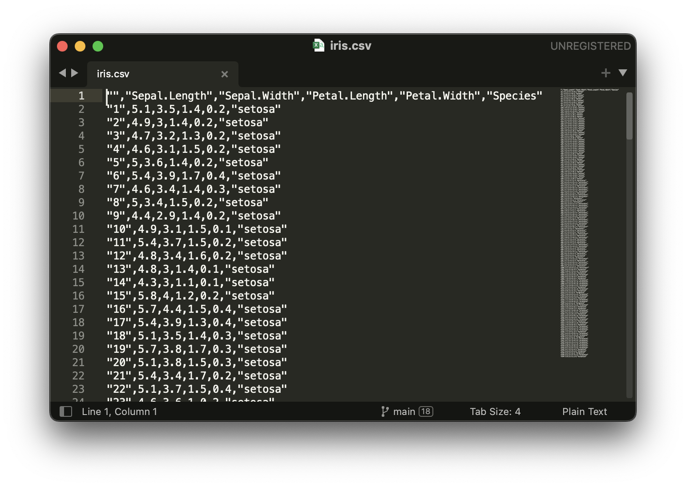

Show code
library(tidyverse)
library(reshape2)
library(reactable)
palette1 <- c("#648fff","#785ef0","#dc267f","#fe6100","#ffb000","#000000","#ffffff")
palette2 <- c("#CC79A7","#D55E00","#0072B2","#F0E442","#009E73","#56B4E9","#E69F00","#000000")Seminar[2] <- Data Wrangling, Desriptives & Visualisierung
library(tidyverse)
library(reshape2)
library(reactable)
palette1 <- c("#648fff","#785ef0","#dc267f","#fe6100","#ffb000","#000000","#ffffff")
palette2 <- c("#CC79A7","#D55E00","#0072B2","#F0E442","#009E73","#56B4E9","#E69F00","#000000")In der letzten Woche habt ihr kennengelernt, wie R & RStudio aufgebaut sind, wie die R-Syntax funktioniert, und was es für Datentypen & Funktionen gibt. In dieser Sitzung wollen wir darauf aufbauen und konkreter mit Daten arbeiten. Dabei werden zwei Packages eine große Rolle spielen: dyplr und ggplot2.
Beginnen wir also zunächst damit, Daten in R einzulesen. Wir werden heute mit dem iris Datensatz arbeiten, einem berühmten Datensatz von R.A. Fisher aus dem Jahr 1936, in dem verschiedene Eigenschaften in Bezug auf die Blütengröße verschiedener Spezies der Blume Iris enthalten sind (siehe hier).

Im Zentrum des Datensatzes steht die Größe der verschiedenen Blatttypen für die jeweilige Spezies. Dabei gibt es die Blatttypen Sepal und Petal. Die folgende Grafik verdeutlicht das etwas:

Der Datensatz ist direkt im Package datasets integriert. Um allerdings zu lernen, wie wir Daten bspw. aus .csv einlesen, haben wir den Datensatz nochmal als einzelne Datei vorbereitet. Diese können wir hier herunterladen:
.csv ist ein typisches Datenformat, aus dem wir mit R Daten einlesen können. Wenn wir die Datei mit einem Textbearbeitungsprogramm öffnen, sehen wir, wie die Daten dort strukturiert sind:

Wir sehen, dass die Daten einfach hintereinander per Text in der Datei gespeichert sind, und mit einem Trennzeichen (in diesem Fall das ,) voneinander getrennt sind. Strings werden mit " abgespeichert. Die erste Zeile beschreibt die Spaltennamen.
Nun wissen wir also, wie .csv Dateien funktionieren. Fangen wir also an, die Daten in R-einzulesen:
dataset <- read.csv("assets/datasets/iris.csv")Die Funktion read.csv liest die Dateien ein. Als Parameter müssen wir lediglich den Pfad zur Datei angeben. In unserem Fall handelt es sich um einen relativen Pfad - absolute Pfade würden auch funktionieren. In unserem Fall ist die Datei wir wir wissen mit Komma (,) getrennt, daher brauchen wir nichts weiter als Parameter zu übergeben. Achtung: Das deutsche Excel speichert Dateien bei .csv oft mit Semikolon (;) als Trennzeichen ab (aufrund des Kommas als Dezimaltrennzeichen).
Mac User:innen aufgepasst: Wenn ihr im Finder mit der rechten Maustaste auf eine Datei klickt, und dann
altbzw.optiondrückt, könnt ihr direkt den Pfad zur Datei in eure Zwischenablage kopieren. Das eignet sich hier bspw. besonders gut.
Wenn alles geklappt hat, sollte dataset rechts in unserem Environment auftauchen. Schauen wir es uns also an. Hierzu können wir entweder rechts oben auf das Objekt klicken, damit es sich im Viewer öffnet, oder wir schauen es uns hier an:
datasetWie wir sehen gibt es mehrere Spalten für die Länge und Breite der Blätter (e.g., Sepal.Length), sowie eine Spalte mit der Spezies (Species).
Werfen wir nun einen genaueren Blick in die Daten.
Um schnell einen Überblick über die Daten zu bekommen, eignet sich die summary() Funktion:
summary(dataset) X Sepal.Length Sepal.Width Petal.Length
Min. : 1.00 Min. :4.300 Min. :2.000 Min. :1.000
1st Qu.: 38.25 1st Qu.:5.100 1st Qu.:2.800 1st Qu.:1.600
Median : 75.50 Median :5.800 Median :3.000 Median :4.350
Mean : 75.50 Mean :5.843 Mean :3.057 Mean :3.758
3rd Qu.:112.75 3rd Qu.:6.400 3rd Qu.:3.300 3rd Qu.:5.100
Max. :150.00 Max. :7.900 Max. :4.400 Max. :6.900
Petal.Width Species
Min. :0.100 Length:150
1st Qu.:0.300 Class :character
Median :1.300 Mode :character
Mean :1.199
3rd Qu.:1.800
Max. :2.500 Hier sehen wir direkt deskriptive Werte wie Minimum, Maximum oder Median für jede einzelne Spalte. Für die Spalte Species sehen wir allerdings lediglich, dass diese als character gespeichert ist, wenngleich es sich eigentlich um einen Faktor handelt, da wir ja bereits wissen, dass es drei Spezies gibt. Das können wir ändern:
dataset$Species <- as.factor(dataset$Species)Führen wir nun den Code erneut aus, sehen wir die entsprechenden Faktorlevel bzw. Ausprägungen und die jeweiligen Datenpunkte pro Ausprägung:
summary(dataset) X Sepal.Length Sepal.Width Petal.Length
Min. : 1.00 Min. :4.300 Min. :2.000 Min. :1.000
1st Qu.: 38.25 1st Qu.:5.100 1st Qu.:2.800 1st Qu.:1.600
Median : 75.50 Median :5.800 Median :3.000 Median :4.350
Mean : 75.50 Mean :5.843 Mean :3.057 Mean :3.758
3rd Qu.:112.75 3rd Qu.:6.400 3rd Qu.:3.300 3rd Qu.:5.100
Max. :150.00 Max. :7.900 Max. :4.400 Max. :6.900
Petal.Width Species
Min. :0.100 setosa :50
1st Qu.:0.300 versicolor:50
Median :1.300 virginica :50
Mean :1.199
3rd Qu.:1.800
Max. :2.500 Das Gleiche würden wir sehen, wenn wir mit der Funktion levels die Ausprägungen für die entsprechende Spalte abfragen:
levels(dataset$Species)[1] "setosa" "versicolor" "virginica" Strenggenommen hat uns die summary() Funktion bereits viele interessante Werte für alle Spalten gegeben. Falls wir dies aber für eine einzelne Spalte machen wollen, können wir dies natürlich auch tun:
mean(dataset$Sepal.Length)[1] 5.843333Wie wir sehen, kann die mean() Funktion mit einer Spalte eines Dataframes (über den $-Operator ausgewählt) arbeiten, und gibt uns den entsprechenden Mittelwert aus. Gleich verhält es sich mit der Standardabweichung:
sd(dataset$Sepal.Length)[1] 0.8280661Wie wir in der ersten Seminarstunde bereits gesagt haben, bietet R als Statistiksoftware natürlich eine Vielzahl eingebauter Standard-Funktionen. So können wir etwa auch gleich die Korrelation zwischen Sepal.Width und Sepal.Length berechnen…
cor(dataset$Sepal.Length,dataset$Sepal.Width, method = "pearson")[1] -0.1175698… oder die Quantile ausgeben lassen:
quantile(dataset$Sepal.Length) 0% 25% 50% 75% 100%
4.3 5.1 5.8 6.4 7.9 Das sind natürlich alles nur Beispiele der im base Package enthaltenen Funktionen - alle weiteren können wir bspw. in der Dokumentation oder über help(base) finden.
Angenommen, wir wollen die Spalte Species von den anderen Spalten trennen, und in einem separaten Aufgabenblatt abspeichern. Dies können wir über die $ und <- Operatoren machen:
dataset_species <- dataset$SpeciesDies speichert die entsprechende Spalte als Objekt dataset_species in unserem Environment. Dies geschieht als Vektor des Typs factor. Die Länge des Vektors entspricht natürlich der Anzahl an Observations:
length(dataset_species)[1] 150Nun wollen wir einen Schritt weitergehen, und nicht nur einzelne Spalten extrahieren, sondern unseren Datensatz auf Basis gewisser Kriterien filtern, bzw. ein Subset bilden. Base R bietet dafür die subset() Funktion. Deren Syntax ist folgendermaßen:
dataset_filtered <- subset(dataset, Sepal.Width > 3)Wir definieren das betreffende Objekt dataset, sowie die Spalte, nach der wir filtern wollen (Sepal.Width) und unsere Bedingung (> 3).
Wir wollen aber noch weiter spezifizieren. Angenommen, wir wollen, dass zusätzlich nur Blumen der Spezies setosa im Datensatz enthalten sind, und wir nur die Spalten Sepal.Width und Sepal.Length betrachten wollen:
dataset_filtered2 <- subset(dataset, Sepal.Width > 3 & Species == "setosa",select = c(Sepal.Width,Sepal.Length,Species))Der obige Befehl hat das Objekt dataset_filtered2 erzeugt, welches die entsprechenden Filterungen beinhaltet.
Wir haben nun also gelernt, wie wir sogenannte Subsets von Dataframes auf Basis von Variablenausprägungen und Spalten erzeugen können, und diese enstprechend in unserem Environment speichern können.
Wenn wir nun allerdings einen Blick in unser Environment werfen, und uns vorstellen, wie dieses nach einer R-Session aussehen könnte, stellt sich vielleicht eine Frage: Wie können wir den Überblick behalten?

Dabei, sowie bei vielen anderen Dingen die mit Data Wrangling zu tun haben, hilft uns das dplyr package. Dazu auf der nächsten Seite mehr.